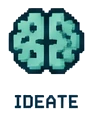
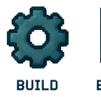

Use deliberatelyChoose AI only when responsiveness adds instructional value.Learner-facing AI
I have grown my L&D practice by learning AI beyond surface-level prompting. I design and maintain model-backed learning experiences, structure the instructions and context they rely on, test their behavior, and build QA and evaluation workflows around the outputs so the technology stays useful, bounded, and accountable to the learner task.
Model-backed LearningSystem InstructionsQA WorkflowsExpert Evaluation
How my AI practice has grown
From asking a model for help to designing the system around the model.
I use AI as part of an instructional system: define the learner job, constrain behavior, provide context, test edge cases, evaluate outputs, and maintain the experience as the content or model changes.

Build the behaviorDesign instructions, context, states, constraints, and fallbacks.Design the learning
Use an AI customer to make discovery practice responsive.
The learner is not choosing a branch; they are having a conversation. A well-designed AI customer can reveal a pain point, respond to a useful question, and help the learner see which next move earns better discovery.
AC
AI customer
Jordan · Operations lead
Customer cueRepeated handoffs
What to uncoverWhere work slows
Why it mattersImpact on the team
Tiny interaction demo
Try a simulated AI-assessment feedback turn.
Choose the response that best moves a discovery conversation forward. The feedback is drawn from a small response library so this remains a transparent demo, not a live AI tool.

Scenario: first discovery callSimulation only · no live AI
Which follow-up is most likely to uncover the customer’s need?
Choose a response to see formative feedback.
Development example
A contained conversational guide with a clear job to do.

Sanitized development example
The Hiring Guide turns a broad portfolio into a focused visitor journey.
It is a contained, public-facing example of a conversational experience: a visitor arrives with a hiring question, gets routed toward relevant evidence, and can choose a direct next step. The design makes the guide’s purpose and limits clear instead of treating it as an all-purpose authority.
Focused content spaceCurated response pathsClear human next step
Explore the Hiring Guide